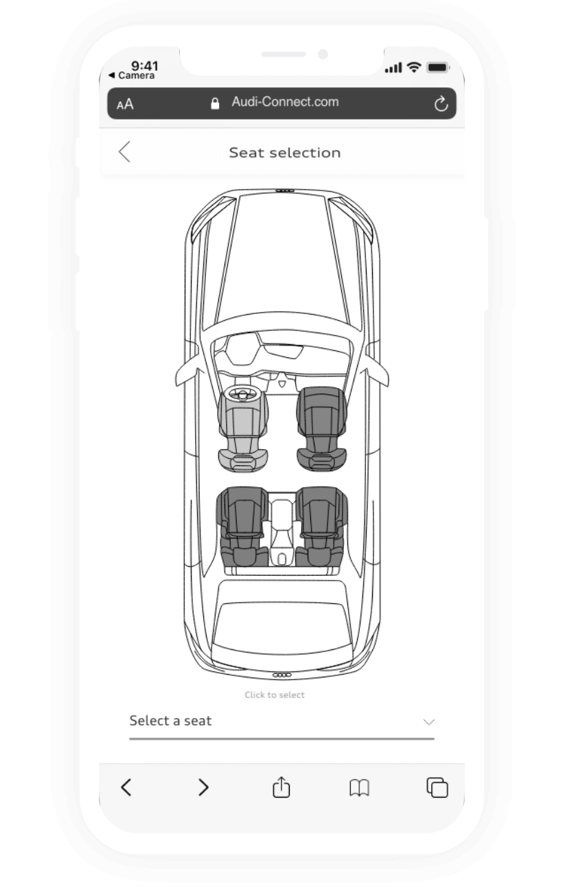
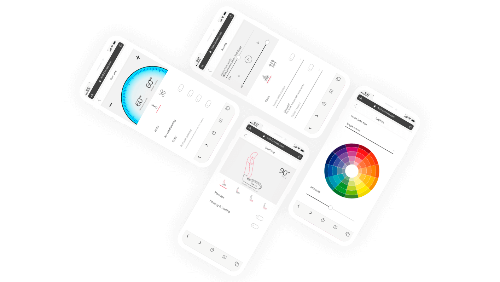

Audi has many apps…
Audi has many apps and all of them serve a very little purpose. Also, we found out that NOBODY wants to download an app to try it out.
Areas of focus
Security
It is important for the application to be secure. Data is the new resource.
Control
Passengers and drivers need a better way to control and make use of the vehicle.
Communication
We also looked at the problem as an opportunity to establish stronger customer — brand relations.
Design strategy
The application has been designed with brand consistency to the native mobile app with some adaptations to better fit within a web app format.
We defined four main options for the e-tron car users:
audio
lights
seats
climate
The way it would work
The myAudi application on the driver’s phone will act as a mediator between the rideshare and the car.
This ensures the driver has full control over the features accessed over the duration of the trip.
Pairing
Passenger’s phone
Driver’s phone
Car dashboard
Possible device conflict and how it can be solved
For example, it would be able for the driver to set tolerances to things like the music volume. The driver would also be able to set a password for additional privacy.
Seat selection page is important for the driver to set hierarchy to solve the conflict between two or more paired devices and remain in control of the car.
Data is the new resource
This data can be very useful for knowing what preferences a person likes when they ride, what features are used most often, and how to best market their features to prospective buyers.
Second horizon
There are many input methods that could be employed in the future state.
Building on the system we developed instead of the rideshare scanning a QR code more seamless input methods could be deployed like voice or face recognition.
- Helps accessibility
- Allows for variety of tools
- More data to collect
- Sync as soon as a user enters a car
Looking further into the future
Having end-user anonymously access all the premium features during their rideshare experience builds up trust to the Audi brand. In the future people might get so familiar with the digital service, so it may become the reason why they would use Audi cars to get somewhere.
Explaining screens using a scenario
1. Pairing
Using a QR-code or any other pairing method, a user would connect with a car through a driver’s phone. This requires the Internet connection.
2. Logging in
After seat selection, the device is connected to the system and ready for making changes.
3. Accessing features
Depending on the tolerance the driver would set, a passenger would have access to the most used interior settings from their phone.
PROUD TO WIN 2ND PLACE